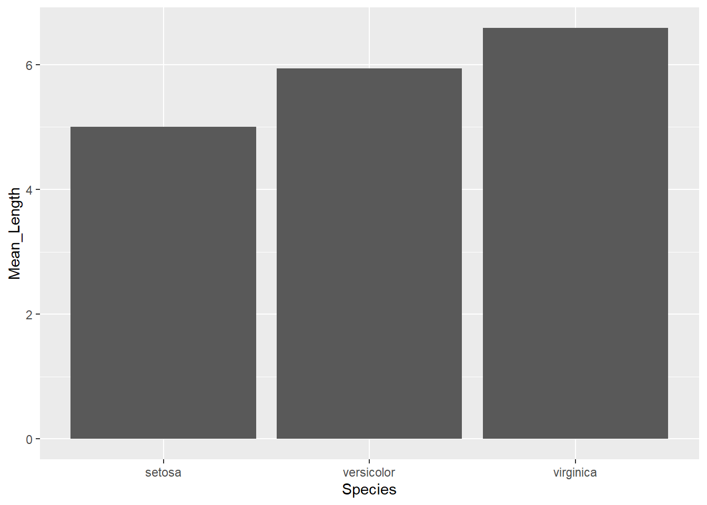

Chapter 3 R - Dealing with data
3.1 Opening files
Before opening the data
First, you need to tell R where the files are located.
He is lazy that way, and will not look everywhere on your computer for them.
So, tell him by using the command setwd().
Reading the data
Usually, when using R, you want to work with data.
This data is usually already there and you want to open it in R.
The good thing is that R can read just about anything (just google “read”file type” in R” on google).
Here I show you how to read some of the most common formats.
Be sure to install the xlsx and haven packages to open Excell and SPSS files, respectively.
Additionally, there are multiple ways to read the same file.
Some will be built in R itself, others will require external packages.
This is important to know because some functions, although working, may be outdated or just give you some sort of weird error.
Maybe you can overcome this by using a different package.
If you want to import/read an Excel file, just use:
read.xlsx(file = 'example.xlsx', sheetName = 'page_1', header = TRUE) (xlsx package)
If a text
read.delim(file = 'example.txt', header = TRUE, sep = ',', dec = '.')
CSV:
read.csv(file = 'example.csv', header = TRUE, sep = ',', dec = '.')
SAV (SPSS):
read_sav(file = 'example.sav') (haven package)
Managing your imported data
To have your data in your environment, so that you can mess with it, you should assign your read command to a variable (object).
Lets say you do the following mydata <- read.delim(file = 'example.txt', header = TRUE, sep = ',', dec = '.').
Now, your mydata object is the dataframe containing that imported data set.
mydata <- read.csv('data/heart/heart_2020_cleaned.csv')Possible problems
You may encounter several problems.
Here are a few of the most common error messages you will face when importing data to R.
- “the number of columns is superior to the data” or the data is all jumbled.
Perhaps one of the most common problems.
This probably has to due with R separating columns where it shouldn’t and making more columns than it should.
You can fix this perhaps by making sure the sep command is specifying the exact separator of the file.
It helps to open the file with excel, for instance, and check the separator and the decimals symbol (you don’t want to be separating columns by the decimal symbol).
For instance, sometimes R reads the .csv file (which means comma separated file) and you have commas as decimals (instead “;” is the separator).
This creates way to many columns that mismatch the number of headers present.
- cannot open file ‘name_of_file.csv’: No such file or directory.
Make sure you are in the right working directory or are specifying the path correctly.
There will surely be more problems, but you can find a way around them by using google.
Checking the data
After you’ve opened the data, you should take a peak at it.
There’s several ways of doing this such as head(df) or some others I’m not recalling at the moment.
Lets see bellow.
head(mydata)
# you can add a "," and say the number of rows you want to preview
head(mydata, 10)
# Or you can just View it all
#View(mydata)3.2 Opening multiple files
Lets say you have a folder, lets assume is named “data”, and in there you have all your data files (files from each participant).
Ideally, to analyze and view the data as a whole, you would want to import all of the data files, and then merge them into a big data file, containing all the participants (identified accordingly).
Here’s a snippet of code that would allow you to do that.
Beware though, any file that matches the criteria (in this case “.csv” files) will be gathered from the folder (your working directory).
Firstly, lets gather the names of the files in our directory that we want to import.
# Setting our working directory
setwd('C:/Users/fabio/OneDrive/My Things/Stats/Teaching/R_Book/data')
# Empty list to list all txt files in folder
list_of_files <- list()
# Searches for ".csv" files in the folder
list_all_data <- dir(pattern='.csv')
# For each ".csv" file, append this file to a list that will contain all ".csv" file names.
for (file in list_all_data){
list_of_files <- c(list_of_files, file)
cat('\nFile processed:', file) # prints the file names
}##
## File processed: Participant_1.csv
## File processed: Participant_10.csv
## File processed: Participant_2.csv
## File processed: Participant_3.csv
## File processed: Participant_4.csv
## File processed: Participant_5.csv
## File processed: Participant_6.csv
## File processed: Participant_7.csv
## File processed: Participant_8.csv
## File processed: Participant_9.csv# Organizing the files
list_of_files <- as.character(list_of_files) # To character
#list_of_files <- mixedsort(sort(list_of_files)) # Sorting them by name
list_of_files <- as.list(list_of_files) # Transforming it to list
# How many files were processed?
cat('\nTotal number of files processed:', length(unlist(list_of_files)))##
## Total number of files processed: 10Then we need to create a function that iterates over all of this file names. It will need to import each file (by their name) and append them to a general dataframe.
# Setting our working directory
setwd('C:/Users/fabio/OneDrive/My Things/Stats/Teaching/R_Book/data')
# Create an empty dataframe where all data will be stored
df_all <- data.frame()
# Create a simple reading function for every element in a list
import_data <- function(file_name){
for (name in file_name){ # for every name in that list
df <- read.csv(name, header=TRUE, encoding = 'utf-8', sep=',') # read that name and assign it to "df"
df_all <- rbind(df_all, df) # add "df" to that list
}
df_all <<- df_all # Makes this object available globally
}
# Running function
import_data(file_name = list_of_files)3.3 Merging
You can join two data frames either by rows or by columns.
Typically, you use rows when you try too join more data to your current data frame.
To do so, you can use rbind().
# Splitting the data by rows
d1 <- USArrests[1:20, ]
d2 <- USArrests[21:nrow(USArrests), ]
# Creating a new dataframe with the merged data
merged_d <- rbind(d1, d2)More frequently, perhaps, you want to join complementary information (more variables) to your preexisting data.
To do so, you can use cbind().
# Splitting the data by columns
d1 <- USArrests[, c(1,2)]
d2 <- USArrests[, c(3,4)]
# Creating a new dataframe with the merged data
merged_d <- cbind(d1, d2)However, this above code only works correctly (as intended) if your data is perfectly lined up.
For instance, rbind() will work if you have the same number of variables (columns), with the same names and in the same positions.
So you need to be sure this is the case before you merge the data frames.
As for cbind() on the other hand, it requires you to have the same number of entire (rows) and for these to be arranged in the same manner (otherwise your info would mismatch).
You can try and order things correctly, but you can easily place some information incorrectly.
To circumvent this, you can use merge().
In this command you only have to specify the IDs (e.g., “sample_ID” or “person_ID”) that allow R to connect the information in the right place.
# Preparing the data
d <- USArrests
d$State <- rownames(d)
rownames(d) <- NULL
d <- d[, c(5,3,1,2,4)]
# Creating two separate dataframes
d1 <- d[, c(1:2)]
d2 <- d[, c(1, 3:5)]# Joining dataframes by the "State" column
d_all <- merge(x = d1, y = d2, by = 'State')Now lets say the data frames weren’t perfectly matched.
For instance lets say we remove Alabama from d1.
d1 <- d1[-1, ] # Removing Alabama
# Merging
d_all <- merge(x = d1, y = d2, by = 'State') # adds only what matches
d_all <- merge(x = d1, y = d2, by = 'State', all = TRUE) # adds everything
head(d_all)## State UrbanPop Murder Assault Rape
## 1 Alabama NA 13.2 236 21.2
## 2 Alaska 48 10.0 263 44.5
## 3 Arizona 80 8.1 294 31.0
## 4 Arkansas 50 8.8 190 19.5
## 5 California 91 9.0 276 40.6
## 6 Colorado 78 7.9 204 38.7Now you check the d_all you will see that there is no Alabama.
You can use the parameter all or all.x or all.y to indicate if you want all of the rows in the data frames (either all or just the x or y data frames, respectively) to be added to the final data frame.
If so, as you can see, Alabama is also imported, even thought there is NA in the in one of the fields (because even though its not in d1, it is in the d2 data frame).
There are other parameters that can be tweaked for more specific scenarios, just run ?merge() to explore the function and its parameters.
3.4 Exporting
Aside from importing, sometimes we also want to export the files we created/modified in R. We can do this with several commands, but perhaps the simpler ones are:
write.table(x = df, file = 'namewewant.txt', sep = ',', dec = '.')
This tells R to export the df dataframe, to a not existing file with a name “namewewant.txt”, that is separated by commas and has “.” for decimal points.
We can also export to an existing data file, and ask for append = TRUE, thus appending our data to the data already existing in that file.
Be sure thought, that this data has the same structure (e.g., number of columns, position of the columns).
We can also do the same thing as above, but instead create a “.csv” file.
write.csv(x = df, file = 'namewewant.csv')
As an example, lets export the dataframe we created in the chunks above. Note that if we don’t specify the path along with the name of the file to be created, R will save the file to the current working directory.
# Tells the path I want to export to.
path = 'C:/Users/fabio/OneDrive/My Things/Stats/Teaching/R_Book/'
# Merges the path with the file name I want to give it.
filename <- paste(path, 'some_data.csv', sep = '')
# Export it
write.csv(x = df_all, file = filename)3.5 Special cases in R
In R variables, but more specifically on data frames, you can encounter the following default symbols:
NA: Not Available (i.e., missing value)
NaN: Not a Number (e.g., 0/0)
Inf e -Inf: Infinity
These are special categories of values and can mess up your transformations and functions. We will talk about them more in the next chapter.
3.6 Manipulating the data in dataframes
Now, in R you can manage your dataframe as you please. You can do anything. And I truly mean anything. Anything you can do in Excel and then some.
3.6.1 Subsetting a dataframe
Subsetting is a very important skill that you should try to master. It allows you to select only the portions of your data frame that you want. This is vital for any type of data manipulation and cleaning you try to accomplish.
The symbols $ lets you subset (select) columns of a dataframe really easily, if you just want a column.
df <- iris
df$Sepal.Length## [1] 5.1 4.9 4.7 4.6 5.0 5.4 4.6 5.0 4.4 4.9 5.4 4.8 4.8 4.3 5.8 5.7 5.4 5.1
## [19] 5.7 5.1 5.4 5.1 4.6 5.1 4.8 5.0 5.0 5.2 5.2 4.7 4.8 5.4 5.2 5.5 4.9 5.0
## [37] 5.5 4.9 4.4 5.1 5.0 4.5 4.4 5.0 5.1 4.8 5.1 4.6 5.3 5.0 7.0 6.4 6.9 5.5
## [55] 6.5 5.7 6.3 4.9 6.6 5.2 5.0 5.9 6.0 6.1 5.6 6.7 5.6 5.8 6.2 5.6 5.9 6.1
## [73] 6.3 6.1 6.4 6.6 6.8 6.7 6.0 5.7 5.5 5.5 5.8 6.0 5.4 6.0 6.7 6.3 5.6 5.5
## [91] 5.5 6.1 5.8 5.0 5.6 5.7 5.7 6.2 5.1 5.7 6.3 5.8 7.1 6.3 6.5 7.6 4.9 7.3
## [109] 6.7 7.2 6.5 6.4 6.8 5.7 5.8 6.4 6.5 7.7 7.7 6.0 6.9 5.6 7.7 6.3 6.7 7.2
## [127] 6.2 6.1 6.4 7.2 7.4 7.9 6.4 6.3 6.1 7.7 6.3 6.4 6.0 6.9 6.7 6.9 5.8 6.8
## [145] 6.7 6.7 6.3 6.5 6.2 5.9If you want more columns, you can use [].
By indicating df[rows,columns].
df[ , 'Sepal.Length'] # just the "Sepal.Length]"## [1] 5.1 4.9 4.7 4.6 5.0 5.4 4.6 5.0 4.4 4.9 5.4 4.8 4.8 4.3 5.8 5.7 5.4 5.1
## [19] 5.7 5.1 5.4 5.1 4.6 5.1 4.8 5.0 5.0 5.2 5.2 4.7 4.8 5.4 5.2 5.5 4.9 5.0
## [37] 5.5 4.9 4.4 5.1 5.0 4.5 4.4 5.0 5.1 4.8 5.1 4.6 5.3 5.0 7.0 6.4 6.9 5.5
## [55] 6.5 5.7 6.3 4.9 6.6 5.2 5.0 5.9 6.0 6.1 5.6 6.7 5.6 5.8 6.2 5.6 5.9 6.1
## [73] 6.3 6.1 6.4 6.6 6.8 6.7 6.0 5.7 5.5 5.5 5.8 6.0 5.4 6.0 6.7 6.3 5.6 5.5
## [91] 5.5 6.1 5.8 5.0 5.6 5.7 5.7 6.2 5.1 5.7 6.3 5.8 7.1 6.3 6.5 7.6 4.9 7.3
## [109] 6.7 7.2 6.5 6.4 6.8 5.7 5.8 6.4 6.5 7.7 7.7 6.0 6.9 5.6 7.7 6.3 6.7 7.2
## [127] 6.2 6.1 6.4 7.2 7.4 7.9 6.4 6.3 6.1 7.7 6.3 6.4 6.0 6.9 6.7 6.9 5.8 6.8
## [145] 6.7 6.7 6.3 6.5 6.2 5.9df[5, ] # row 5 across all columns## Sepal.Length Sepal.Width Petal.Length Petal.Width Species
## 5 5 3.6 1.4 0.2 setosadf[1, 'Sepal.Length'] # row 1 of the "Sepal.Length" column## [1] 5.1df[c(1:5), c('Sepal.Length', 'Sepal.Width')] # row 1 to 5 from the Sepal.Length" and "Sepal.Width""## Sepal.Length Sepal.Width
## 1 5.1 3.5
## 2 4.9 3.0
## 3 4.7 3.2
## 4 4.6 3.1
## 5 5.0 3.63.6.2 Columns
Lets start by some simply manipulations. Lets say you want to change column names. Ideally, I would avoid spaces in the headers (and overall actually) but you do as you please.
df <- iris # iris (mtcars) is a built-in dataset. Just imagine I'm reading from a file
# Option 1
colnames(df) <- c('Colname 1', 'Colname 2', 'Colname 3', 'Colname 4', 'Colname 5')
# Option 2
names(df) <- c('Colname 1', 'Colname 2', 'Colname 3', 'Colname 4', 'Colname 5')
# Or just change a specific column name
colnames(df)[2] <- 'Colname 2 - New'
# Final result
head(df)## Colname 1 Colname 2 - New Colname 3 Colname 4 Colname 5
## 1 5.1 3.5 1.4 0.2 setosa
## 2 4.9 3.0 1.4 0.2 setosa
## 3 4.7 3.2 1.3 0.2 setosa
## 4 4.6 3.1 1.5 0.2 setosa
## 5 5.0 3.6 1.4 0.2 setosa
## 6 5.4 3.9 1.7 0.4 setosaWe can also change the order of the columns.
df <- iris # Just restoring the dataframe to be less confusing
df <- df[,c(5,1,2,3,4)] # 5 column shows up first now, followed by the previous first column, etc...We can sort by a specific (or multiple columns).
df <- df[order(df[, 2]), ] # Orders by second column
df <- df[order(-df[, 2]), ] # Orders by second column descending
df <- df[order(-df[, 2], df[, 3]), ] # Orders by second columns descending and then by third column
# Alternatively since this is a bit confusing (does the same as above, respectively)
df <- dplyr::arrange(df, Sepal.Length)
df <- dplyr::arrange(df, desc(Sepal.Length))
df <- dplyr::arrange(df, desc(Sepal.Length), Sepal.Width)We can create new columns.
new_data <- rep('New info', nrow(df)) # Creating new irrelevant data
df$NewColumn <- new_data # Added this data (data must have same length as dataframe!)
head(df)## Species Sepal.Length Sepal.Width Petal.Length Petal.Width NewColumn
## 1 virginica 7.9 3.8 6.4 2.0 New info
## 2 virginica 7.7 2.6 6.9 2.3 New info
## 3 virginica 7.7 2.8 6.7 2.0 New info
## 4 virginica 7.7 3.0 6.1 2.3 New info
## 5 virginica 7.7 3.8 6.7 2.2 New info
## 6 virginica 7.6 3.0 6.6 2.1 New infoWe can remove columns.
df$Petal.Length <- NULL
# or
df <- within(df, rm(Sepal.Length))And we can create and transform the columns.
df <- iris
df$Sepal_Area <- df$Sepal.Length * df$Sepal.Width # Creating new variable with is the multiplication of the first 2.
df$Sepal_Area <- round(df$Sepal_Area, 1) # Transforming existing variable, making it just 1 decimal.
head(df)## Sepal.Length Sepal.Width Petal.Length Petal.Width Species Sepal_Area
## 1 5.1 3.5 1.4 0.2 setosa 17.8
## 2 4.9 3.0 1.4 0.2 setosa 14.7
## 3 4.7 3.2 1.3 0.2 setosa 15.0
## 4 4.6 3.1 1.5 0.2 setosa 14.3
## 5 5.0 3.6 1.4 0.2 setosa 18.0
## 6 5.4 3.9 1.7 0.4 setosa 21.13.6.3 Rows
Altering specific rows is a bit trickier. Fortunatelly, this is usually less relevant, since we usually just want to change or apply a condition to an entire column. Having said this, here’s some relevant commands.
Say you want to alter rows that meet a condition.
df$Sepal.Length[df$Sepal.Length <= 5] <- '<5' # Any value in in the Sepal.Length column that is less or equal than five will turn to 0
df$Sepal.Length[df$Sepal.Length == 7.9] <- 8 # Changing rows with 7.9 to 8. Or want to create a new entry (i.e., row).
row <- data.frame(5.6, 3.2, 1.9, 0.1, 'new_species', 10000) # Create a new row (all columns must be filled)
colnames(row) <- colnames(df)
df <- rbind(df, row)
tail(df)## Sepal.Length Sepal.Width Petal.Length Petal.Width Species Sepal_Area
## 146 6.7 3.0 5.2 2.3 virginica 20.1
## 147 6.3 2.5 5.0 1.9 virginica 15.8
## 148 6.5 3.0 5.2 2.0 virginica 19.5
## 149 6.2 3.4 5.4 2.3 virginica 21.1
## 150 5.9 3.0 5.1 1.8 virginica 17.7
## 151 5.6 3.2 1.9 0.1 new_species 10000.0Or just want to delete a row.
df <- df[-c(151, 152),] # deletes row 152 and 152If you want a package that allows you to do the above changes in rows and columns just like you would in Excel, you can too. Just visit: https://cran.r-project.org/web/packages/DataEditR/vignettes/DataEditR.html
Although I would argue against it, since this doesn’t make your R code easy to re-execute.
3.6.4 Tidyverse & Pipes
Before presenting the following commands below, we should talk quickly about tidyverse and pipes. Tidyverse, as the name implies “Tidy” + “[Uni]verse” is a big package that contains more packages. All of these packages are designed for data science. These are:
dplyr: Basic grammar for data manipulation (also responsible for pipes).
ggplot2: Used to create all sorts of graphics.
forcats: Facilitates functional programming for data science (e.g., can replace loops with maps, a simpler command)
tibble: Better dataframe, making it cleaner and more efficient (although they are mostly interchangeable).
readr: Reads data of several types in a smart manner (including csv).
stringr: Makes working with string information easy.
tidyr: Helps to tidy data presentation.
purr: Makes handling factors (categorical variables) easier.
library(tidyverse)## -- Attaching packages --------------------------------------- tidyverse 1.3.1 --## v ggplot2 3.3.6 v purrr 0.3.4
## v tibble 3.1.5 v dplyr 1.0.8
## v tidyr 1.2.0 v stringr 1.4.0
## v readr 2.1.2 v forcats 0.5.1## Warning: package 'ggplot2' was built under R version 4.1.3## Warning: package 'tidyr' was built under R version 4.1.3## Warning: package 'readr' was built under R version 4.1.3## Warning: package 'dplyr' was built under R version 4.1.3## -- Conflicts ------------------------------------------ tidyverse_conflicts() --
## x dplyr::filter() masks stats::filter()
## x dplyr::lag() masks stats::lag()As you can see by the output you get when you load it, it basically loads them all making in a single line.
Now onto pipes.
Basically this allow you to chain your commands.
It comes from the dplyr or magritrr packages.
It can be read as follows:
WITH THIS %>% EXECUTE THIS %>% THEN EXECUTE THIS %>% THEN THIS
So instead of this:
object <- function_1(object)
object <- function_2(object)
object <- function_3(object)
# or
object <- function_3(function_2(function_1(object)))We can instead have this
object %>%
function_1() %>%
function_2() %>%
function_3()Here are two concrete examples:
With 4+4, add another 4.
4+4 %>% +4With my dataframe (df), select its “column1” and then calculate the mean.
df %>% select(column1) %>% mean()
Remember, you can call this pipe command by pressing “CTRL & SHIFT + M” in Windows and Command + Shift + M on a Mac.
You may find it weird at first, but trust me, it will become intuitive in no time.
If you want a better tutorial on pipes just visit the following link: https://www.datacamp.com/community/tutorials/pipe-r-tutorial
3.6.5 Filtering
Now, lets say we want to filter the dataframe. That is, we want to select our data based on some criteria.
df <- iris
#We can filter by Species. In this case we are only selecting "setosa".
df %>%
filter(Species == 'setosa')
# Or we can select "everything but".
df %>%
filter(Species != 'setosa')
# And we can even select multiple things
df %>%
filter(Species != 'setosa' & Sepal.Length > 7.5)
# We can also select one "OR" the other
df %>%
filter(Species != 'setosa' | Sepal.Length > 7.5)
# We can remove NAs
df %>%
filter(!is.na(Species))3.6.6 Arranging
We can arrange the dataframe as we wish. We can sort by just 1 column or more. In the latter case the second, third and so on variables will break the ties. Missing values are sorted to the end.
# It defaults as ascending
df %>%
arrange(Sepal.Length)
# We can make it descending:
df %>%
arrange(desc(Sepal.Length))3.6.7 Selecting
Another useful trick is to select columns. With this command we can select the columns we want, or do not want.
# Selecting Sepal.Lenght and Species columns
df %>%
select(Sepal.Length, Species)
# We can also select multiple columns by saying from x to y:
df %>%
select(Sepal.Length:Species)
# To select everything but:
df %>%
select(-c(Sepal.Length, Species))3.6.8 Mutating
To create new columns (or modify existing ones), we can use mutate. This a versatile command that allows you to do several things. Here are a bunch of examples:
# Create a new column with just the string "word" on it.
df <- df %>%
mutate(WordColumn = 'word')
# Create a combination of two columns
df %>%
mutate(TwoColsTogether = paste(Species, WordColumn))
# Create the sum of two columns
df %>%
mutate(SumOfCols = Petal.Length + Petal.Width)
# Among others
df %>%
mutate(Times100 = Petal.Length*100)
df %>%
mutate(DividedBy2 = Petal.Width/2)3.6.9 Ifelse
ifelse() is a base function of R (not from tidyverse, altough you have if_else() from tidyverse which works and does exactly the same thing), but it fits quite well with its workflow.
Specifically it fits quite well with the mutate() command.
What it basically says is: if THIS_CONDITION_IS_MET then DO_CASE_1 otherwise DO_CASE_2.
The function will look like this: ifelse(THIS_CONDITION_IS_MET, DO_CASE_1, DO_CASE_2).
Lets look at some examples below.
df <- iris
# Replacing for just 1 condition.
df %>%
mutate(SpeciesAlt = ifelse(Species == 'setosa', 'Specie1', Species)) %>%
head() # just to show the first 5 rows for the purpose of demonstration.## Sepal.Length Sepal.Width Petal.Length Petal.Width Species SpeciesAlt
## 1 5.1 3.5 1.4 0.2 setosa Specie1
## 2 4.9 3.0 1.4 0.2 setosa Specie1
## 3 4.7 3.2 1.3 0.2 setosa Specie1
## 4 4.6 3.1 1.5 0.2 setosa Specie1
## 5 5.0 3.6 1.4 0.2 setosa Specie1
## 6 5.4 3.9 1.7 0.4 setosa Specie1# Replacing for 3 conditions (Gets a bit chaotic)
df %>%
mutate(SpeciesAlt = ifelse(Species == 'setosa', 'Specie1',
ifelse(Species == 'versicolor', 'Specie2',
ifelse(Species == 'virginica', 'Specie3', Species)))) %>%
head() # just to show the first 5 rows for the purpose of demonstration.## Sepal.Length Sepal.Width Petal.Length Petal.Width Species SpeciesAlt
## 1 5.1 3.5 1.4 0.2 setosa Specie1
## 2 4.9 3.0 1.4 0.2 setosa Specie1
## 3 4.7 3.2 1.3 0.2 setosa Specie1
## 4 4.6 3.1 1.5 0.2 setosa Specie1
## 5 5.0 3.6 1.4 0.2 setosa Specie1
## 6 5.4 3.9 1.7 0.4 setosa Specie1As you can see, for changing just 1 Species, its quite easy and practical. But for more than say 2 it starts to get very confusing.
As a simpler alternative, when you deal with plenty of cases, you should use recode().
# Recoding all 3 cases
df %>%
mutate(SpeciesAlt = recode(Species, setosa = "Specie1",
versicolor = "Specie2",
virginica = 'Specie3')) %>%
head() # just to show the first 5 rows for the purpose of demonstration.## Sepal.Length Sepal.Width Petal.Length Petal.Width Species SpeciesAlt
## 1 5.1 3.5 1.4 0.2 setosa Specie1
## 2 4.9 3.0 1.4 0.2 setosa Specie1
## 3 4.7 3.2 1.3 0.2 setosa Specie1
## 4 4.6 3.1 1.5 0.2 setosa Specie1
## 5 5.0 3.6 1.4 0.2 setosa Specie1
## 6 5.4 3.9 1.7 0.4 setosa Specie1# Recoding just 2 and giving all the rest the label "others"
df %>%
mutate(SpeciesAlt = recode(Species, setosa = "Specie1",
versicolor = "Specie2", .default = 'others')) %>%
head() # just to show the first 5 rows for the purpose of demonstration.## Sepal.Length Sepal.Width Petal.Length Petal.Width Species SpeciesAlt
## 1 5.1 3.5 1.4 0.2 setosa Specie1
## 2 4.9 3.0 1.4 0.2 setosa Specie1
## 3 4.7 3.2 1.3 0.2 setosa Specie1
## 4 4.6 3.1 1.5 0.2 setosa Specie1
## 5 5.0 3.6 1.4 0.2 setosa Specie1
## 6 5.4 3.9 1.7 0.4 setosa Specie1As an alternative (since it allows you to make more elaborate conditionals), you can use case_when().
# Recoding all 3 cases
df %>%
mutate(SpeciesAlt = case_when(
Species == 'setosa' ~ 'Specie1',
Species == 'versicolor' ~ 'Specie2',
Species == 'virginica' ~ 'Specie3'
)) %>%
head() # just to show the first 5 rows for the purpose of demonstration.## Sepal.Length Sepal.Width Petal.Length Petal.Width Species SpeciesAlt
## 1 5.1 3.5 1.4 0.2 setosa Specie1
## 2 4.9 3.0 1.4 0.2 setosa Specie1
## 3 4.7 3.2 1.3 0.2 setosa Specie1
## 4 4.6 3.1 1.5 0.2 setosa Specie1
## 5 5.0 3.6 1.4 0.2 setosa Specie1
## 6 5.4 3.9 1.7 0.4 setosa Specie1# Recoding just 2 and giving all the rest the label "others"
df %>%
mutate(SpeciesAlt = case_when(
Species == 'setosa' ~ 'Specie1',
Species == 'versicolor' ~ 'Specie2',
TRUE ~ 'others'
)) %>%
head() # just to show the first 5 rows for the purpose of demonstration.## Sepal.Length Sepal.Width Petal.Length Petal.Width Species SpeciesAlt
## 1 5.1 3.5 1.4 0.2 setosa Specie1
## 2 4.9 3.0 1.4 0.2 setosa Specie1
## 3 4.7 3.2 1.3 0.2 setosa Specie1
## 4 4.6 3.1 1.5 0.2 setosa Specie1
## 5 5.0 3.6 1.4 0.2 setosa Specie1
## 6 5.4 3.9 1.7 0.4 setosa Specie13.6.10 Grouping and Summarizing
group_by() and summarise(), are two very important functions from dplyr.
The first one, in itself, does not do anything.
It is meant to be followed by the latter.
In the group_by(variables) command you tell R on which variables you want to group your data by specifying the column that contains this (or these) variable(s).
In the example below the only column that makes sense grouping by is Species.
By telling R to group with species, the next command summarise() give a summary output for each category of the Species column.
Lets look at the examples that follow.
df <- iris
# Summarising mean Sepal.length by species
df %>%
group_by(Species) %>% # Grouping by this variable
summarise(Mean_By_Species = mean(Sepal.Length)) ## # A tibble: 3 x 2
## Species Mean_By_Species
## <fct> <dbl>
## 1 setosa 5.01
## 2 versicolor 5.94
## 3 virginica 6.59You can group by more than one factor and ask for other summaries, such as median, sd, and other basic operations. For instance:
df %>%
group_by(Species) %>%
summarise(count = n()) # Gives you the number of entries in each group## # A tibble: 3 x 2
## Species count
## <fct> <int>
## 1 setosa 50
## 2 versicolor 50
## 3 virginica 50You can then build operations on top of your summaries (like mutations or plots)
df %>%
group_by(Species) %>%
summarise(Mean_Length = mean(Sepal.Length)) %>%
ggplot(aes(Species, Mean_Length)) +
geom_col()
3.6.11 Changing Format (Wide/Long)
There are two types of ways that the data can be structured in. These ways are important for many reasons, not just for the way they look. Certain analysis, commands or functions used in R prefer (or rather mandate) that the data is in a specific format. This format can be either wide or long.
In the wide format each each variable level has a column. Lets say we are looking at how people rate pictures of happy, angry and neutral people in terms of good looks on a rating of 0-10. If we were to have the data in a wide format, we would have a data frame with (aside from columns related to the ID of the participant and so forth) 3 columns. One, labeled “Ratings_Happy” for instance, that would have all the ratings given by each participant to the happy faces, another with the ratings given to the angry faces and another to the neutral faces. It should look something like this:
However, if we were to have the data in long format, we would instead have just have two columns (aside from the Participant ID and other information columns you might want). One column, labeled “Facial_Expression” for instance, would have either “Happy”, “Angry” or “Neutral”. The other column, labeled “Rating”, would have the rating given to the face. Since all of the participants rated every condition, each participant would have 3 entries in the dataframe (hence making it longer). It should look something like this:
This is quite simple to do actually.
The commands we will be using are pivot_wider and pivot_longer and they are quite intuitive.
Lets work through this example.
Lets first say we want to transform data frame from long to wide.
df_long <- data.frame(Participant_ID = rep(1:5,each=3),
Facial_Expression = rep(c('Happy','Angry','Neutral'), 5),
Ratings = c(6,4,2,6,4,7,6,5,7,5,8,6,5,8,5))
# Transforming
df_wide <- df_long %>%
pivot_wider(id_cols = Participant_ID, # Condition that identifies the grouping (ID) factor of each entry.
names_from = Facial_Expression, # Where to find our future column names
values_from = Ratings) # Where are the values that will fill those columns
head(df_wide)## # A tibble: 5 x 4
## Participant_ID Happy Angry Neutral
## <int> <dbl> <dbl> <dbl>
## 1 1 6 4 2
## 2 2 6 4 7
## 3 3 6 5 7
## 4 4 5 8 6
## 5 5 5 8 5Now doing the reverse, that is, turning the data from the current wide format and making it longer again.
df_long <- df_wide %>%
pivot_longer(cols = c('Happy','Angry','Neutral'), # Columns to turn into long
names_to = 'Facial_Expression', # What will the column with the labels be called
values_to = 'Ratings') # What will the column with the values be called
head(df_long)## # A tibble: 6 x 3
## Participant_ID Facial_Expression Ratings
## <int> <chr> <dbl>
## 1 1 Happy 6
## 2 1 Angry 4
## 3 1 Neutral 2
## 4 2 Happy 6
## 5 2 Angry 4
## 6 2 Neutral 73.6.12 Missing Values
We have several ways of dealing with missing values NA (which, if you forget already, means “Not Available”).
We can remove them, or omit them, depending on the situation.
The important thing to note is that you should be aware if your dataframe contains NA values, since these might provide misleading results, or simple provide error messages.
For instance, if you ask the mean of a column that contains just one NA, the result will be NA.
You can either specify na.rm = TRUE on the command (if the specific command allows you to do so), or just remove the NA values prior to running the command.
First lets learn how to check for missing values. There are several ways. Here are a few
table(is.na(df)) # tells you how many data points are NAs (TRUE) or not (FALSE) in the whole dataframe.##
## FALSE
## 750colSums(is.na(df)) # tells you more specifically the number of NAs per column in your dataframe## Sepal.Length Sepal.Width Petal.Length Petal.Width Species
## 0 0 0 0 0which(colSums(is.na(df))>0) # just tells you exactly the ones that have NAs (and how many)## named integer(0)df[!complete.cases(df),] # tells you the whole row that has an NA value in it.## [1] Sepal.Length Sepal.Width Petal.Length Petal.Width Species
## <0 rows> (or 0-length row.names)df$Sepal.Length <- as.numeric(df$Sepal.Length)
# Asking a mean with NA values
df %>%
summarise(Mean = mean(Sepal.Length))## Mean
## 1 NA# Removing NAs when asking the mean
df %>%
summarise(Mean = mean(Sepal.Length, na.rm=TRUE))## Mean
## 1 5.843333# Removing NAs then asking for the mean
df %>%
filter(!is.na(Sepal.Length)) %>%
summarise(Mean = mean(Sepal.Length))## Mean
## 1 5.843333We can remove these NA rows or substitute them.
# Replacing NA with 0
df <- df %>%
mutate(Sepal.Length = ifelse(is.na(Sepal.Length), 0, Sepal.Length))
# Removing
df <- df %>%
filter(!is.na(Sepal.Length))
# or remove all NA rows
df <- na.omit(df)3.6.13 Counts
Already mentioned above. Gives you the number of entries.
# Gives you the number per category of Species
df %>%
group_by(Species) %>%
summarise(count = n())## # A tibble: 3 x 2
## Species count
## <fct> <int>
## 1 setosa 51
## 2 versicolor 50
## 3 virginica 50# Counts the total number of entries
df %>%
select(Species) %>%
count()## n
## 1 1513.6.14 Ungrouping
Lastly, you can use ungroup() in a pipe to remove the grouping that you’ve did, if you want to execute commands over the “ungrouped” data.
This is very rarely used, at least by me.
However, in certain cases it might be useful.
Here’s an example, where I want to center the variable Sepal.Length, but I want to do so considering the species it belongs to.
df %>%
group_by(Species) %>% # grouping by species
mutate(Sepal.Width = as.numeric(Sepal.Width),
Speal.Length = as.numeric(Sepal.Length)) %>%
mutate(MeanPerSpecie = mean(Sepal.Width), # creates mean by species
CenteredWidth = Sepal.Width - mean(Sepal.Width)) %>% # subtracts the mean (of the corresponding specie).
select(Species, Sepal.Width, MeanPerSpecie, CenteredWidth) %>%
ungroup() # remove grouping in case i want to do more mutates, but now NOT considering the groups of species.## # A tibble: 151 x 4
## Species Sepal.Width MeanPerSpecie CenteredWidth
## <fct> <dbl> <dbl> <dbl>
## 1 setosa 3.5 3.40 0.0980
## 2 setosa 3 3.40 -0.402
## 3 setosa 3.2 3.40 -0.202
## 4 setosa 3.1 3.40 -0.302
## 5 setosa 3.6 3.40 0.198
## 6 setosa 3.9 3.40 0.498
## 7 setosa 3.4 3.40 -0.00196
## 8 setosa 3.4 3.40 -0.00196
## 9 setosa 2.9 3.40 -0.502
## 10 setosa 3.1 3.40 -0.302
## # ... with 141 more rows3.6.15 Strings/Characters
Sometimes we want to work on strings/characters. We may want to replace strings, alter them in some way, split them into different columns, etc. So here I will introduce a few examples of what we can do to strings in R.
For instance lets say we want to find a pattern of a string in a column of a dataframe in R. For that we will use the grep family of functions which is built-in in R.
# We can either find the rows on which this pattern appear
grep('set', df$Species)
# We can pull the string in which this pattern appears
grep('set', df$Species, value = TRUE)
# Or return a TRUE or FALSE per row
grepl('set', df$Species) # the "l" after grep stands for logic (i.e., TRUE/FALSE)
# We can find how many entries with that pattern are present
sum(grepl('set', df$Species))
# We can substitute a pattern directly in the dataframe
sub('set', 'Set', df$Species)There are additional commands within this family of functions that will allow you to extract, find or substitute exactly what you want and obeying each condition you might want. For that just look into: https://www.rdocumentation.org/packages/base/versions/3.6.2/topics/grep
Another relevant package used to deal with strings is stringr, which comes with the tidyverse.
Here I’ll showing some brief examples of what you can do with it, although you can do much more, and you should check its website: https://stringr.tidyverse.org/
# Just preparing the df
df2 <- mtcars
df2$CarName <- rownames(mtcars)
rownames(df2) <- NULL
# StringR
df2 %>%
mutate(CarName = str_replace(CarName, 'Merc', 'Mercedes'))## mpg cyl disp hp drat wt qsec vs am gear carb CarName
## 1 21.0 6 160.0 110 3.90 2.620 16.46 0 1 4 4 Mazda RX4
## 2 21.0 6 160.0 110 3.90 2.875 17.02 0 1 4 4 Mazda RX4 Wag
## 3 22.8 4 108.0 93 3.85 2.320 18.61 1 1 4 1 Datsun 710
## 4 21.4 6 258.0 110 3.08 3.215 19.44 1 0 3 1 Hornet 4 Drive
## 5 18.7 8 360.0 175 3.15 3.440 17.02 0 0 3 2 Hornet Sportabout
## 6 18.1 6 225.0 105 2.76 3.460 20.22 1 0 3 1 Valiant
## 7 14.3 8 360.0 245 3.21 3.570 15.84 0 0 3 4 Duster 360
## 8 24.4 4 146.7 62 3.69 3.190 20.00 1 0 4 2 Mercedes 240D
## 9 22.8 4 140.8 95 3.92 3.150 22.90 1 0 4 2 Mercedes 230
## 10 19.2 6 167.6 123 3.92 3.440 18.30 1 0 4 4 Mercedes 280
## 11 17.8 6 167.6 123 3.92 3.440 18.90 1 0 4 4 Mercedes 280C
## 12 16.4 8 275.8 180 3.07 4.070 17.40 0 0 3 3 Mercedes 450SE
## 13 17.3 8 275.8 180 3.07 3.730 17.60 0 0 3 3 Mercedes 450SL
## 14 15.2 8 275.8 180 3.07 3.780 18.00 0 0 3 3 Mercedes 450SLC
## 15 10.4 8 472.0 205 2.93 5.250 17.98 0 0 3 4 Cadillac Fleetwood
## 16 10.4 8 460.0 215 3.00 5.424 17.82 0 0 3 4 Lincoln Continental
## 17 14.7 8 440.0 230 3.23 5.345 17.42 0 0 3 4 Chrysler Imperial
## 18 32.4 4 78.7 66 4.08 2.200 19.47 1 1 4 1 Fiat 128
## 19 30.4 4 75.7 52 4.93 1.615 18.52 1 1 4 2 Honda Civic
## 20 33.9 4 71.1 65 4.22 1.835 19.90 1 1 4 1 Toyota Corolla
## 21 21.5 4 120.1 97 3.70 2.465 20.01 1 0 3 1 Toyota Corona
## 22 15.5 8 318.0 150 2.76 3.520 16.87 0 0 3 2 Dodge Challenger
## 23 15.2 8 304.0 150 3.15 3.435 17.30 0 0 3 2 AMC Javelin
## 24 13.3 8 350.0 245 3.73 3.840 15.41 0 0 3 4 Camaro Z28
## 25 19.2 8 400.0 175 3.08 3.845 17.05 0 0 3 2 Pontiac Firebird
## 26 27.3 4 79.0 66 4.08 1.935 18.90 1 1 4 1 Fiat X1-9
## 27 26.0 4 120.3 91 4.43 2.140 16.70 0 1 5 2 Porsche 914-2
## 28 30.4 4 95.1 113 3.77 1.513 16.90 1 1 5 2 Lotus Europa
## 29 15.8 8 351.0 264 4.22 3.170 14.50 0 1 5 4 Ford Pantera L
## 30 19.7 6 145.0 175 3.62 2.770 15.50 0 1 5 6 Ferrari Dino
## 31 15.0 8 301.0 335 3.54 3.570 14.60 0 1 5 8 Maserati Bora
## 32 21.4 4 121.0 109 4.11 2.780 18.60 1 1 4 2 Volvo 142E3.6.16 Splits
We can also split a dataframe into multiple ones, by using group_split() or split().
They work and do the same.
The only difference is that the former comes with the tidyverse and also just works a bit better with the pipes.
For instance, lets split the dataframe by species.
df %>%
group_split(Species)## <list_of<
## tbl_df<
## Sepal.Length: double
## Sepal.Width : character
## Petal.Length: character
## Petal.Width : character
## Species : factor<fb977>
## >
## >[3]>
## [[1]]
## # A tibble: 51 x 5
## Sepal.Length Sepal.Width Petal.Length Petal.Width Species
## <dbl> <chr> <chr> <chr> <fct>
## 1 5.1 3.5 1.4 0.2 setosa
## 2 4.9 3 1.4 0.2 setosa
## 3 4.7 3.2 1.3 0.2 setosa
## 4 4.6 3.1 1.5 0.2 setosa
## 5 5 3.6 1.4 0.2 setosa
## 6 5.4 3.9 1.7 0.4 setosa
## 7 4.6 3.4 1.4 0.3 setosa
## 8 5 3.4 1.5 0.2 setosa
## 9 4.4 2.9 1.4 0.2 setosa
## 10 4.9 3.1 1.5 0.1 setosa
## # ... with 41 more rows
##
## [[2]]
## # A tibble: 50 x 5
## Sepal.Length Sepal.Width Petal.Length Petal.Width Species
## <dbl> <chr> <chr> <chr> <fct>
## 1 7 3.2 4.7 1.4 versicolor
## 2 6.4 3.2 4.5 1.5 versicolor
## 3 6.9 3.1 4.9 1.5 versicolor
## 4 5.5 2.3 4 1.3 versicolor
## 5 6.5 2.8 4.6 1.5 versicolor
## 6 5.7 2.8 4.5 1.3 versicolor
## 7 6.3 3.3 4.7 1.6 versicolor
## 8 4.9 2.4 3.3 1 versicolor
## 9 6.6 2.9 4.6 1.3 versicolor
## 10 5.2 2.7 3.9 1.4 versicolor
## # ... with 40 more rows
##
## [[3]]
## # A tibble: 50 x 5
## Sepal.Length Sepal.Width Petal.Length Petal.Width Species
## <dbl> <chr> <chr> <chr> <fct>
## 1 6.3 3.3 6 2.5 virginica
## 2 5.8 2.7 5.1 1.9 virginica
## 3 7.1 3 5.9 2.1 virginica
## 4 6.3 2.9 5.6 1.8 virginica
## 5 6.5 3 5.8 2.2 virginica
## 6 7.6 3 6.6 2.1 virginica
## 7 4.9 2.5 4.5 1.7 virginica
## 8 7.3 2.9 6.3 1.8 virginica
## 9 6.7 2.5 5.8 1.8 virginica
## 10 7.2 3.6 6.1 2.5 virginica
## # ... with 40 more rows3.6.17 Mapping
Mapping is quite useful. It allows you to map a function to a certain output. For instance, if you first need to split the dataframe, then perform a correlation test, you can easily do this altogether.
df %>%
mutate(Sepal.Length = as.numeric(Sepal.Length), # turning these columns to numeric
Sepal.Width = as.numeric(Sepal.Width)) %>%
group_split(Species) %>% # split by pictures
map(~ cor.test(.$Sepal.Length, .$Sepal.Width))## [[1]]
##
## Pearson's product-moment correlation
##
## data: .$Sepal.Length and .$Sepal.Width
## t = 6.7473, df = 49, p-value = 1.634e-08
## alternative hypothesis: true correlation is not equal to 0
## 95 percent confidence interval:
## 0.5173516 0.8139116
## sample estimates:
## cor
## 0.6939905
##
##
## [[2]]
##
## Pearson's product-moment correlation
##
## data: .$Sepal.Length and .$Sepal.Width
## t = 4.2839, df = 48, p-value = 8.772e-05
## alternative hypothesis: true correlation is not equal to 0
## 95 percent confidence interval:
## 0.2900175 0.7015599
## sample estimates:
## cor
## 0.5259107
##
##
## [[3]]
##
## Pearson's product-moment correlation
##
## data: .$Sepal.Length and .$Sepal.Width
## t = 3.5619, df = 48, p-value = 0.0008435
## alternative hypothesis: true correlation is not equal to 0
## 95 percent confidence interval:
## 0.2049657 0.6525292
## sample estimates:
## cor
## 0.4572278We can see it more clearly in this dataframe.
mtcars %>%
split(.$cyl) %>%
map(~ lm(mpg ~ wt, data = .x)) %>%
map_dfr(~ as.data.frame(t(as.matrix(coef(.))))) # returns the result in a dataframe format## (Intercept) wt
## 1 39.57120 -5.647025
## 2 28.40884 -2.780106
## 3 23.86803 -2.192438